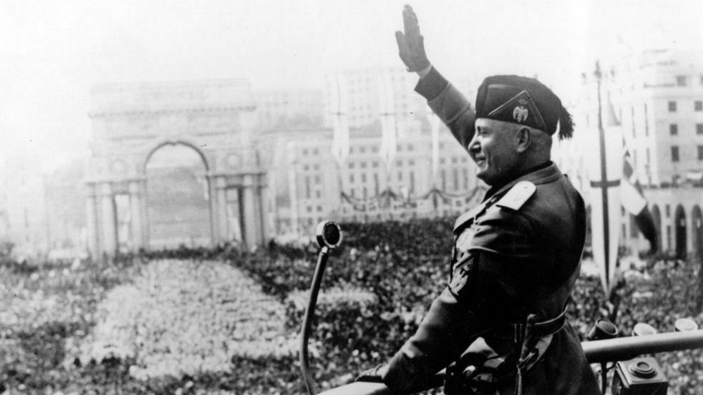
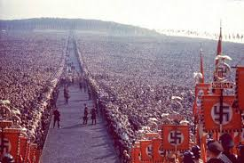
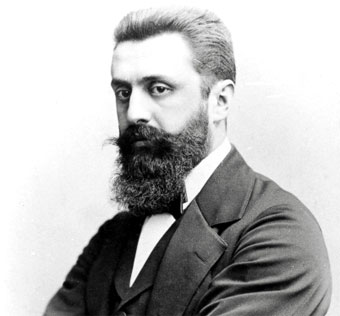
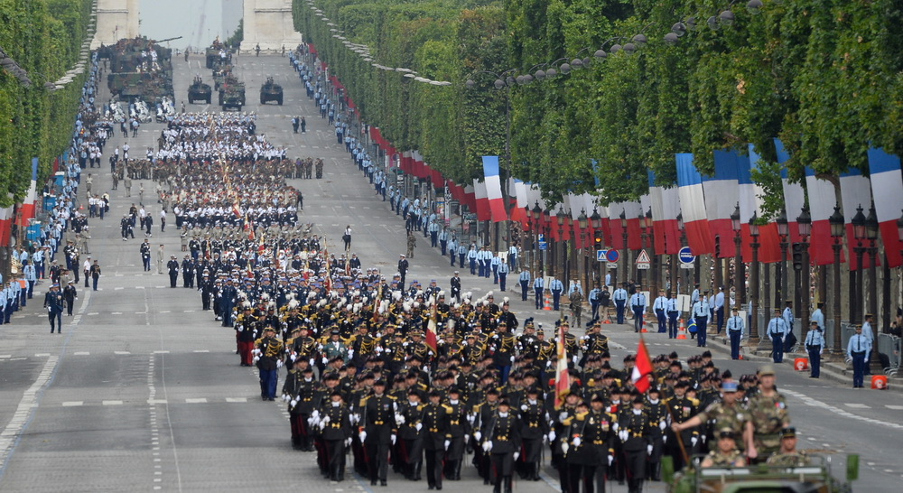
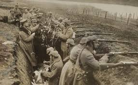

Opinión: El nacionalismo, un elemento crucial para la formación de fascismos en Europa
Autor: Martín Leon

Bennito Mussolini en un acto
Para mediados del siglo anterior, algunos estados europeos estaban dirigidos por regímenes autoritarios de tipo fascista. Sin duda el fascismo mostró una faceta de distintas sociedades que avergüenza a la humanidad, y es por eso que hoy en día muchos se preguntan qué hay que hacer para prevenir que vuelvan a asumir gobiernos de este corte. Pero para eso, hay que entender porque asumieron en un principio. En este artículo intentaré demostrar por qué el fascismo no podía existir si no había un componente nacionalista presente en Europa.
Como explica Zygmund Bauman en su obra Modernidad y Holocausto , el fascista entiende a la sociedad como un jardín, y ese jardín se tiene que cuidar, mejorar y moldear. Para eso es necesario sacar a las “malas hierbas”. Cuidar el jardín es “una actividad creativa, no destructiva” (1997:127). Bajo esta analogía entendemos que el objetivo principal del fascismo es formar una sociedad ideal, y necesariamente para que la sociedad sea ideal, los ciudadanos tienen que ser ideales.

Demostración de poder Nazi
Para formar esta sociedad ideal es indispensable poder manejar a las masas para poder establecer un régimen totalitario, donde se eduque al ciudadano sobre qué debe hacer un ciudadano ideal. En el texto de Gentile el Culto del Littorio , se menciona una cita de Mussollini que muestra de forma muy clara la postura que tenía el duce sobre las masas: “La masa para mi no es otra cosa que un rebaño de ovejas, hasta que se la organiza. Bajo ningún concepto estoy contra ella. No niego que pueda regirse por sí sola. Pero si se la conduce, hay que manejarla con dos riendas: entusiasmo e interés” (2006:123). Era crucial entonces influir en las masas para establecer una política totalitaria y poder construir así una sociedad ideal. Pero la pregunta era ¿Cómo? Es ahí donde surge el relato nacionalista como elemento unificador de la población.
Como explica Anderson en Comunidades Imaginadas , la nación es una comunidad imaginada porque “aun los miembros de la nación más pequeña no conocerán jamás a la mayoría de sus compatriotas, no los verán ni oirán siquiera hablar de ellos, pero en la mente de cada uno vive la imagen de su comunión” (1979:23) . Esta comunidad imaginada va a ser el marco para poder establecer una religión estatal, que se va a transmitir por medio de una liturgia compuesta por mitos políticos, ritos y costumbres vía instituciones como las escuelas y va a tener como objeto final crear una sociedad ideal.
El nacionalismo lo que infunde es un sentimiento de pertenencia en la población, donde se entiende a la sociedad como un colectivo y le hace creer al ciudadano promedio que tiene que rendir su vida a una causa mayor. Como explica Eric Hobsbawn en La era del imperio , el mito nacionalista fue crucial para poder llevar a cabo guerras y formar ejércitos como la primera Guerra Mundial (1983:172-174). Los ideólogos fascistas utilizaron este impulso y lo llevaron al extremo: le hicieron creer a la población que comportarse de cierta forma era un acto de patriotismo. Y este comportamiento podía consistir desde tener un buen estado físico y festejar el aniversario de la marcha sobre Roma en la Italia de Mussollini, hasta incendiar locales de judíos en la Alemania de Hitler.
Para entender cómo el nacionalismo fue crucial para que se lleve a cabo la agenda política fascista se puede analizar el caso de la Shoá, el genocidio hacia judíos, homosexuales, discapacitados, gitanos, entre otros, llevado a cabo por la Alemania Nazi. Los nacionalismos, al establecer límites territoriales y culturales, exigen la definición de quienes están adentro y quienes fuera de esta comunidad imaginada, y a su vez construyen la noción de un ciudadano promedio: estableciendo rasgos fenotípicos, religión, etc. El fascismo va a tomar la construcción de este ciudadano promedio, la va a profundizar (agregando aspectos como la ideología y orientación sexual) y lo va a convertir en ciudadano ideal. Y va entender la necesidad de limpiar a la sociedad de aquellos ciudadanos que no cumplen con los estándares establecidos, para poder así mantener a la sociedad pura y aspirar a construir una sociedad ideal. Es por eso, que a fin de cuentas para los ideólogos de este genocidio, la Shoá no fue más que un medio para conseguir el objetivo final: una sociedad más pura, y como diría Bauman, ellos entendían que estaban haciendo el trabajo de un jardinero.
En conclusión, sin el nacionalismo, el fascismo carecía de una estructura que permita establecer una religión estatal para poder así controlar a las masas. Tampoco iba a ser posible establecer la concepción de un ciudadano ideal, si no había de antemano en la población la idea de la pertenencia a una comunidad. Y entonces, sin la concepción del ciudadano ideal y de una sociedad ideal, no iba a haber una motivación para llevar a cabo limpiezas étnicas como lo fue la Shoá.
Los nacionalismos del siglo XIX
En un momento donde los nacionalismos están tan presentes, y donde muchas fronteras aún están en disputa, esta nota analiza la fundación del nacionalismo, los cambios que llevó a cabo durante finales del siglo XIX, y desarrolla sobre la importancia del elemento nacional para la formación de los estados, la construccion de una legitimidad del poder y el control sobre las masas.
Autores: Mateo Moragues y Martín Leon
Hace un poco más de 200 años el mundo comenzó a dividirse geográficamente gracias a la aparición de una nueva característica que cada individuo debía tener: su nacionalidad. Los nacionalismos llegaron para homogeneizar a la población de un mismo territorio, pero también para marcar una distinción entre la población de un determinado territorio y aquellos habitantes que no formaban parte del mismo.
Lo cierto es que el nacionalismo es un arma política muy poderosa. La humanidad ha hecho cosas horribles en nombre de su nación: genocidios, guerras, atentados, entre otras cosas. Y es irónico porque millones de personas sacrificaron su vida en guerras defendiendo a la población de su patria sin saber siquiera el nombre de la mayoría de los ciudadanos a los que estaba defendiendo. Este es el planteo que hace el historiador Anderson al plantear que las naciones no son más que “comunidades imaginadas”. El autor explica que la nación “es imaginada porque aun los miembros de la nación más pequeña no conocerán jamás a la mayoría de sus compatriotas, no los verán ni oirán siquiera hablar de ellos, pero en la mente de cada uno vive la imagen de su comunión”(1993:25).
Y es aún más irónico pensar que un soldado desconocido de un país A, mata a otro soldado desconocido de un país B, para defender a muchos ciudadanos desconocidos del país A, pero que, si bien estos ciudadanos son de su propio país, puede ser que tengan menos cosas en común que con el soldado del país B. Este es el planteo que hacen muchos socialistas, donde entienden que el proletariado se debe unir a nivel mundial, en contraposición a buscar una unidad nacional, donde se unen burgueses y proletarios de un mismo país. Por ende, la causa nacional para el socialista es incompatible con el socialismo.
El nacionalismo cumple el rol de unificar poblaciones heterogéneas para crear una misma identidad y así poder formar un estado. Pero, como cita Eric Hobsbawn a Pilsudski, uno de los líderes de la nueva Polonia, en su obra Banderas al viento: Las naciones y el nacionalismo, “«es el estado el que hace la nación y no la nación al estado»” (1998:153). Y ocurre de esta forma porque, como explica Anderson, el nacionalismo no es más que un invento artificial del humano. Es un movimiento que nace en mentes como por ejemplo Theodor Herzl. Hobsbawn explica que el término nacionalismo “se aplicó a todos los movimientos que para los cuales la «causa nacional» era primordial en la política: Es decir, para todos aquellos que exigían el derecho de autodeterminación, en último extremo, el derecho de formar un estado independiente”(1998:153). Hay que tener en cuenta que para los años que estamos analizando, mediados del siglo XIX, los estados europeos que hoy conocemos no estaban formados: Alemania e Italia estaban a punto de unificarse.

Imagen de Theodoro Herzl, padre del Sionismo
El nacionalismo creció mucho gracias a la democratización de la política. Esto es porque “la base del «nacionalismo» de todo tipo era la misma: la voluntad de la gente de identificarse emocionalmente con «su» nación y de movilizarse políticamente”(1998:153). En la teoría, el nacionalismo no era incompatible con ningún movimiento político, y no se identificaba con ninguno en particular. Sin embargo, en la práctica la extrema derecha política se adueñó del nacionalismo. En algunos casos, este nacionalismo de extrema derecha mutó en los fascismos estudiados en la unidad XI.
Hobsbawn explica que el nacionalismo político del siglo XX es muy distinto al de sus orígenes. Menciona 4 aspectos de este cambio: “La aparición del nacionalismo y el patriotismo como una ideología de la que se adueñó la derecha política”, el segundo es que “la autodeterminación nacional, incluyendo la formación de estados soberanos independientes, podía ser una aspiración no sólo de algunas naciones susceptibles de demostrar una viabilidad económica, política y cultural, sino de todos los grupos que afirmaran ser una «nación». (...) El tercer aspecto era la tendencia creciente a considerar que «la autodeterminación nacional» no podía ser satisfecha por ninguna forma de autonomía que no fuera la independencia total.” Y por último, “la novedosa tendencia a definir la nación en términos étnicos y, especialmente, lingüísticos” (1998:154).
En relación al último aspecto mencionado, un excelente ejemplo es el del nacionalismo judío (sionismo), donde el sionismo entendió que todos los judíos (que supuestamente iban a ser futuros habitantes de un futuro estado) debían hablar un mismo idioma, y es por eso que Eliezer Ben Yehuda, un linguista judío de Lituania, modernizó el hebreo y lo convirtió en una lengua que se podía usar en la cotidianeidad. Hasta ese momento, el hebreo era una lengua reservada únicamente para el rezo. Los judíos del este de Europa hablaban en Yidish, los de Turquía y Grecia en ladino, los del medio oriente en árabe y algunos marroquíes en Haketía.
A fin de cuentas, el nacionalismo fue usado como un mecanismo de control. Como vimos en la unidad VII, en la posrevolución francesa se instauró una religión estatal, que estaba formada por mitos, ritos, costumbres, un calendario, en fin toda una liturgia, que responden a la necesidad de homogeneizar a la población para poder controlarla. Hobsbawn explica este fenómeno de forma muy clara: “«La nación» era la nueva religión cívica de los estados” (1998:159). Estas mismas políticas fueron adoptadas por todos los movimientos nacionalistas de finales del siglo XIX y fue llevada a un extremo en los fascismos del siglo XX. Sin ir más lejos, parte de la crítica que le hacen a Iosif Stalin, el famoso término de Trotsky la “revolución traicionada”, consiste en condenar al líder Soviético por instaurar una liturgia nacionalista en la Unión Soviética, donde se vuelven a valores tradicionales rusos y desde las instituciones educativas se construye una mitología nacionalista con la narración histórica de líderes como Ivan el Terrible (Fitzpatrick, 2005:199-206).

Celebracion de la Toma de la Bastilla en Francia
Para que este mecanismo de control y homogeneización funcione, la escuela era fundamental. Era allí donde se enseñaba la liturgia nacional y a ser “buenos súbditos y ciudadanos” (Hobsbawn, 1998: 160). Ya para la época del fascismo, se le sumó a este mecanismo de propaganda la televisión y la radio. Goebbels, ministro de propaganda de Hitler, supo aprovechar al máximo el poder de los medios de comunicación. La propaganda tuvo un papel fundamental para el ascenso del Nazismo al poder. Como el nacionalismo funcionaba como un medio de control, el autor explica con mucha exactitud que “el estado no sólo creaba la nación, sino que necesitaba crear la nación”(1998:159). A su vez, para que funcionen las escuelas era crucial que todos se pudieran comunicar en una misma lengua. De ahí surge la importancia del nacionalismo lingüístico.
El nacionalismo creció a pasos agigantados gracias a la emigración. Los migrantes, al llegar a un nuevo espacio necesitaban fraternizar y recibir ayuda de alguien, y se refugiaban en sus compatriotas. En consecuencia, “la nacionalidad se convirtió en un tejido real de relaciones personales más que una comunidad simplemente imaginaria, por el simple hecho de encontrarse alejados de la patria”(1998:158). Es decir, perdió su carácter ficticio.
La contracara de la emigración masiva fue, es, y probablemente será, la xenofobia. La construcción de la nación permitía diferenciar a la sociedad en 2 tipos de personas: quienes pertenecían y quienes no. Y en un contexto donde la Revolución Industrial había generado avances tecnológicos que dejaron a mucha gente sin trabajo y aumentó mucha la desigualdad, sectores de la población, por lo general una clase media que se vio empobrecida por el impacto de la revolución industrial, encontraban a los inmigrantes como un buen chivo expiatorio para poder culparlos de sus malestares. Y de esta xenofobia muta un antisemetismo en todo Europa, que entendía al judío como un infiltrado en su patria, un individuo con doble nacionalidad, y peor aún, como un infiltrado leal a otra patria. Es por eso que para que la xenofobia aumenta cuando la economía empeora. Y como la extrema derecha levanta la bandera de la xenofobia, si empeora la economía, aumentan los votos de estos partidos. Esta relación inversa se puede observar con claridad en el ascenso del Nazismo. Para 1932 el desempleo de Alemania era de 43,8% (Remo, 2016), sumado a la hiperinflación de 1922 y el tratado de Versalles, es entendible que los alemanes busquen alternativas al fracaso de la República de Weimar. También es entendible que busquen a quien culpar. Esta situación nos hace pensar: ¿Habría asumido al poder el partido Nazi si la economía Alemana hubiera sido más exitosa? Quizás, en un contexto de bienestar económico no asumía Hitler, y hasta quizás no había una segunda guerra mundial.
Protesta en Inglaterra en contra de la inmigración de trabajadores
Como se mencionó anteriormente, otra contracara del nacionalismo fueron los conflictos bélicos. Por un lado, en todo el mundo se llevan a cabo hasta el día de hoy guerras entre distintos países por culpa de alguna frontera o alguna zona que está en disputa. Ejemplos sobran: Crimea, Nagorno Karabaj, etc. Por el otro lado, con el surgimiento del derecho de autodeterminación, muchos pueblos reclaman independizarse, como es el caso de los Vascos o los Catalanes.
El nacionalismo se popularizó tanto en los estados modernos porque era la opción más exitosa hasta el momento de generar una identidad nacional y homogeneizar a la población para poder establecer cierto control. La alternativa al nacionalismo la encontraron muchos estados más adelante en el socialismo. La primera experiencia exitosa fue la Unión Soviética, que entendió que podía movilizar a las masas uniendo al proletariado de la Rusia Zarista y pudieron impulsar así la Revolución Rusa.

Imagen de la Primera Guerra Mundial
En conclusión, los nacionalismos fueron una herramienta muy efectiva para poder construir una identidad nacional que permita homogeneizar a la población para poder así obtener legitimidad de gestión, establecer una autoridad clara y controlar a la población. Para ello, fue crucial la construcción de una liturgia nacional. Esa liturgia tuvo su primer caso de éxito con la Revolución Francesa, la replicaron los estados surgidos durante el siglo XIX y se mantiene hasta el día de hoy. Para transmitir esa liturgia la educación tuvo un papel fundamental, es por eso que se necesitaba establecer una lengua nacional.
Si bien la causa nacional puede ser motivo de orgullo, hay que tener en cuenta que es un arma muy poderosa (y por eso peligrosa) para movilizar masas. Gracias al nacionalismo se pudieron llevar a cabo muchas guerras y matanzas (ya que bajo el relato nacional se motivó a la población a alistarse en los ejércitos) y también por culpa del nacionalismo se llevan a cabo muchas otras.